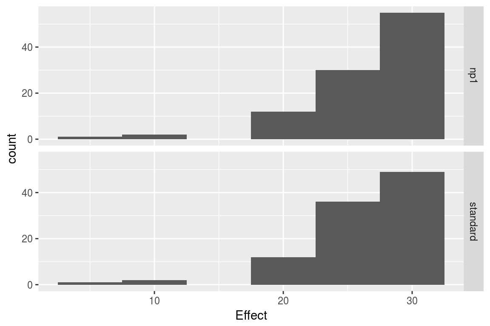
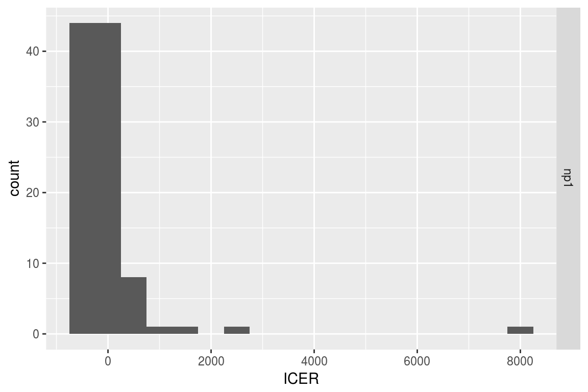
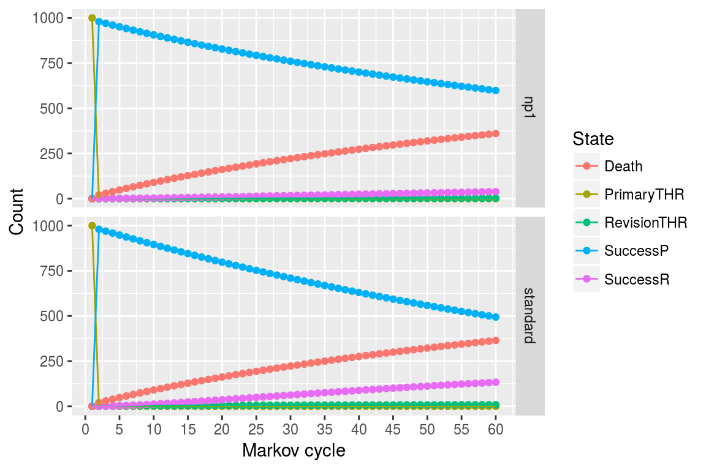

Heterogeneity & Demographic Analysis
2019-10-22
g_heterogeneity.RmdIntroduction
Heterogeneity analysis is a way to explore how the results of a model can vary depending on the characteristics of individuals in a population, and demographic analysis estimates the average values of a model over an entire population.
In practice these two analyses naturally complement each other: heterogeneity analysis runs the model on multiple sets of parameters (reflecting differents characteristics found in the target population), and demographic analysis combines the results.
For this example we will use the result from the assessment of a new total hip replacement previously described in vignette("d-non-homogeneous", "heemod").
Population characteristics
The characteristics of the population are input from a table, with one column per parameter and one row per individual. Those may be for example the characteristics of the indiviuals included in the original trial data.
For this example we will use the characteristics of 100 individuals, with varying sex and age, specified in the data frame tab_indiv:
## # A tibble: 100 x 2
## age sex
## <dbl> <int>
## 1 66 0
## 2 53 0
## 3 68 0
## 4 43 1
## 5 60 1
## 6 45 1
## 7 68 1
## 8 36 0
## 9 77 0
## 10 61 1
## # … with 90 more rows
Running the analysis
res_mod, the result we obtained from run_model() in the Time-varying Markov models vignette, can be passed to update() to update the model with the new data and perform the heterogeneity analysis.
## No weights specified in update, using equal weights.## Updating strategy 'standard'...## Updating strategy 'np1'...Interpreting results
The summary() method reports summary statistics for cost, effect and ICER, as well as the result from the combined model.
## An analysis re-run on 100 parameter sets.
##
## * Unweighted analysis.
##
## * Values distribution:
##
## Min. 1st Qu. Median Mean
## standard - Cost 530.94590166 611.6289179 632.0556033 696.4382593
## standard - Effect 14.30828698 22.7930050 27.3769142 26.0585611
## standard - Cost Diff. - - - -
## standard - Effect Diff. - - - -
## standard - Icer - - - -
## np1 - Cost 615.48340627 637.3508591 643.0485094 661.5856130
## np1 - Effect 14.43982318 23.0848338 27.7656911 26.3231297
## np1 - Cost Diff. -160.47985885 -110.7286273 10.8505119 -34.8526463
## np1 - Effect Diff. 0.09203743 0.1948185 0.2254385 0.2645686
## np1 - Icer -352.23489020 -316.4394659 45.6630446 -26.1796561
## 3rd Qu. Max.
## standard - Cost 802.3426777 871.8854128
## standard - Effect 29.0749005 31.7692206
## standard - Cost Diff. - -
## standard - Effect Diff. - -
## standard - Icer - -
## np1 - Cost 691.6140504 711.4055539
## np1 - Effect 29.5008365 32.0078346
## np1 - Cost Diff. 25.7219412 84.5375046
## np1 - Effect Diff. 0.3499204 0.4556047
## np1 - Icer 125.9207494 918.5122572
##
## * Combined result:
##
## 2 strategies run for 60 cycles.
##
## Initial state counts:
##
## PrimaryTHR = 1000L
## SuccessP = 0L
## RevisionTHR = 0L
## SuccessR = 0L
## Death = 0L
##
## Counting method: 'end'.
##
## Values:
##
## utility cost
## standard 26058.56 696438.3
## np1 26323.13 661585.6
##
## Efficiency frontier:
##
## np1
##
## Differences:
##
## Cost Diff. Effect Diff. ICER Ref.
## np1 -34.85265 0.2645686 -131.7339 standardThe variation of cost or effect can then be plotted.





The results from the combined model can be plotted similarly to the results from run_model().

Weighted results
Weights can be used in the analysis by including an optional column .weights in the new data to specify the respective weights of each strata in the target population.
## # A tibble: 100 x 3
## age sex .weights
## <dbl> <int> <dbl>
## 1 54 1 0.126
## 2 68 1 0.969
## 3 60 1 0.761
## 4 49 0 0.279
## 5 74 0 0.757
## 6 71 1 0.195
## 7 65 0 0.852
## 8 53 1 0.631
## 9 64 0 0.884
## 10 62 1 0.628
## # … with 90 more rows## Updating strategy 'standard'...## Updating strategy 'np1'...## An analysis re-run on 100 parameter sets.
##
## * Weigths distribution:
##
## Min. 1st Qu. Median Mean 3rd Qu. Max.
## 0.007596 0.345349 0.573237 0.539306 0.742337 0.997363
##
## Total weight: 53.93063
##
## * Values distribution:
##
## Min. 1st Qu. Median Mean
## standard - Cost 450.15881156 613.836464 629.4680260 688.8969121
## standard - Effect 7.47256790 22.793005 27.3769142 25.8766294
## standard - Cost Diff. - - - -
## standard - Effect Diff. - - - -
## standard - Icer - - - -
## np1 - Cost 593.80297968 637.950820 642.2020458 659.4530999
## np1 - Effect 7.49009703 23.084834 27.7656911 26.1338670
## np1 - Cost Diff. -160.47985885 -110.728627 13.1000189 -29.4438122
## np1 - Effect Diff. 0.01752913 0.208543 0.2214442 0.2572376
## np1 - Icer -352.23489020 -316.439466 63.4214929 156.1408432
## 3rd Qu. Max.
## standard - Cost 802.3426777 871.8854128
## standard - Effect 29.0749005 31.5986556
## standard - Cost Diff. - -
## standard - Effect Diff. - -
## standard - Icer - -
## np1 - Cost 691.6140504 711.4055539
## np1 - Effect 29.5008365 31.8353665
## np1 - Cost Diff. 24.1143568 143.6441681
## np1 - Effect Diff. 0.3499204 0.4556047
## np1 - Icer 115.6325465 8194.5991768
##
## * Combined result:
##
## 2 strategies run for 60 cycles.
##
## Initial state counts:
##
## PrimaryTHR = 1000L
## SuccessP = 0L
## RevisionTHR = 0L
## SuccessR = 0L
## Death = 0L
##
## Counting method: 'end'.
##
## Values:
##
## utility cost
## standard 25876.63 688896.9
## np1 26133.87 659453.1
##
## Efficiency frontier:
##
## np1
##
## Differences:
##
## Cost Diff. Effect Diff. ICER Ref.
## np1 -29.44381 0.2572376 -114.4615 standardParallel computing
Updating can be significantly sped up by using parallel computing. This can be done in the following way:
- Define a cluster with the
use_cluster()functions (i.e.use_cluster(4)to use 4 cores). - Run the analysis as usual.
- To stop using parallel computing use the
close_cluster()function.
Results may vary depending on the machine, but we found speed gains to be quite limited beyond 4 cores.